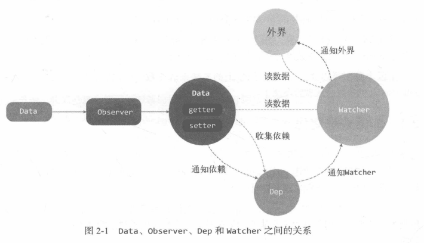

vue实现响应式原理的核心是侦测数据的变化,当数据发生了变化时,通知视图进行相应的更新即可。
而vue中对对象(Object)和数组(Array)的变化侦测采用的方法是不同的。
在JavaScript中对一个对象变化的侦测主要有Object.defineProperty()和 es6的Proxy代理对象两种方法,而vue2.x用的是前者,vue3使用的是后者。
vue实现对Object响应式的整体思路是数据劫持+观察者模式,主要通过以下 4 个步骤来实现的
data、Observer、Dep、Watcher四者之间的关系

1、实现一个监视器Observer,用来劫持并监听data中定义的所有属性,如果属性发生变化,就通知订阅者。
监听器 Observer 的实现,主要作用是让data中数据对象的所有属性变得“可观测”,所谓可观测就是每次数据读或写时,我们都能感知到数据什么时候被读取了或被改写了。
我们知道是使用 Object.defineProperty() 侦测对象的变化,定义一个函数 defineReactive 用来对Object.defineProperty()进行封装。
function defineReactive(data,key,value){
Object.defineProperty(data,key,{
enumerable:true,
configurable:true,
get:function(){
return value
},
set:function(newValue){
if(value === newValue){return}
value = newValue
}
})
}
封装好之后,传入要变成响应式的对象data,属性名key,属性值value即可。
而且每当读取data对象的key对应的数据是就会触发get函数,每当对data对象的key设置数据时set函数触发。
这样简单的封装是没有用的,关键是收集依赖,所谓依赖就是渲染的过程中使用了的数据的表达式或者元素或者组件等就是依赖。
一句话就是,在getter中收集依赖,在数据变化的setter里触发依赖(也就是通知依赖更新)。
加入订阅器之后修改如下:
function defineReactive(data,key,value){
//初始化dep对象,用来存储收集的依赖
let dep = new Dep();
Object.defineProperty(data,key,{
enumerable:true,
configurable:true,
get:function(){
//收集依赖
dep.depend()
return value
},
set:function(newValue){
if(value === newValue){return}
value = newValue
//通知所有的订阅者更新
dep.notify()
}
})
}
这里只是能实现侦测数据的某一个属性的变化,我们希望是侦测数据的所有属性包括子属性了。
这也就是我们最初说的会把data选项中的数据循环遍历让data中数据对象的所有属性变得“可观测”。
所以再封装一个类Observer,用来劫持并监听data中定义的所有属性,将其变成getter/setter。
export default class Observer{
constructor(value){
this.value = value;
//如果不是数组就调用方法遍历对象属性变成响应式数据
if(!Array.isArray(value)){
this.walk(value);
}
}
//这个方法是将对象的所有属性都变成getter和setter,只在数据类型是对象时调用
walk(obj){
//遍历所有属性得到一个数组
var keys = Object.keys(obj);
//循环数组调用 defineReactive方法
for (var i = 0; i 小于 keys.length; i++) {
defineReactive(obj, keys[i]);
}
}
}
//defineReactive也重新定义
function defineReactive(data,key,value){
//增加判断,如果值value又是一个对象则递归调用Observer
if(typeof value === 'object'){
new Observer(value);
}
//初始化dep对象,用来存储收集的依赖
let dep = new Dep;
Object.defineProperty(data,key,{
enumerable:true,
configurable:true,
get:function(){
//收集依赖
dep.depend()
return value
},
set:function(newValue){
if(value === newValue){return}
value = newValue
//通知所有的订阅者更新
dep.notify()
}
})
}
至此,只要把一个object传入Observer中,那么这个object就会变成响应式的object。
缺点:由于JavaScript语言本身的问题,使用getter和setter这种追踪对象变化的方法对有些数据变化是追踪不到的。
比如对象属性的增加和删除,这是因为Object.defineProperty()的getter和setter方法只能侦测数据是否被改变了。
也就是访问或修改,但是不能侦测到新增属性和删除属性。为了解决这个问题Vue2.x是通过提供两个实例方法实现的vm.$set()和vm.$delete()。
2、实现一个订阅器Dep,用来收集订阅者,对监听器 Observer 和 订阅者 Watcher 进行统一管理。
数据对象已经'可观测',我们就可以在数据被读或写的时候通知那些依赖该数据的视图更新了。
依赖一个数据的视图可能有多个,为了方便,我们需要先将所有依赖收集起来,一旦数据发生变化,就统一通知更新。
这个就跟订购房子一样,没房源时要订购房子的人把电话留给房产中介,有房源了由房产中介统一通知要买房子的人。
其实,这就是典型的“发布订阅者”模式,数据变化就是“发布者”相当于房产中介,依赖数据的视图对象就是“订阅者”。
数据变化了就统一通知依赖该数据的视图更新就行,也就是"发布者"发布更新信息,订阅了这条信息的"订阅者"更新视图。
为了方便存储收集所有的依赖,我们创建一个依赖收集容器 Dep类,用来收集、删除以及通知所有依赖(也就是所谓的“订阅者”)。
假设依赖是一个函数(实际是一个watcher实例),保存在全局的 window.target 属性上,vue源码中使用的是 Dep.target保存,源码中Dep类是使用es5函数定义的本质上是一样的。
export default class Dep{
constructor(){
//定义一个数组保存收集的依赖
this.subs = [];
}
//定义一个添加依赖到数组的函数
addSub(sub){
this.subs.push(sub)
}
//定义一个删除依赖的函数
removeSub(sub){
if (this.subs.length) {
let index = this.subs.indexOf(sub);
if (index > -1) {
return this.subs.splice(sub, 1)
}
}
}
//定义一个收集依赖函数
depend(){
//如果依赖存在收集存到数组subs里
if(window.target){
this.addSub(window.target)
}
}
//定义一个通知函数,改变是通知订阅者
notify(){
//创建一个依赖存储副本,防止死循环。也就是稳固订阅者列表
const subs = this.subs.slice();
//循环通知每个依赖更新
for(let i = 0,l = subs.length;i 小于 l;i++){
subs[i].update()
}
}
}
3、实现一个订阅者 Watcher,在收到属性的变化通知后执行相应的方法,从而更新视图。
依赖收集好了,更新之后我们应该通知谁重新渲染视图呢?就是通知那些使用使用了数据的地方,但是使用了数据的地方有很多,而且类型也可能不一样可以是插值、元素、组件等页面元素。
所以应该像抽离依赖收集类一样,抽象一个能集中处理多种情况的类Watcher,然后收集依赖时收集这个类的实例进去,依赖更新时通知也只通知它,具体的让实例自己去通知就行。
订阅者Watcher在初始化的时候需要将自己添加进订阅器Dep中,那该如何添加呢?
我们已经知道监听器Observer是在get函数执行了时添加订阅者Wather的操作的。
所以我们只要在订阅者Watcher初始化的时候触发对应的get函数去执行添加订阅者操作即可。
那又要如何触发get的函数,再简单不过了,只要获取对应的属性值就可以触发了,核心原因就是因为我们使用了Object.defineProperty( )进行数据监听。
这里还有一个细节点需要处理,我们只要在订阅者Watcher初始化的时候才需要添加订阅者,所以需要做一个判断操作,因此可以在订阅器上做一下手脚:在Dep.target上缓存下订阅者,添加成功后再将其去掉就可以了。
先看一个vue实例监听器的实现方法
vm.$watch('a.b.c',function(newVal,oldVal){
//数据变化时做些什么
})
把依赖 a.b.c的watcher添加到依赖对应的dep中即可,这样依赖data.a.b.c发生变化时,通知watcher,由watcher去执行回调实现更新。
export default class Watcher{
constructor(vm,expOrFn,cb,){
this.vm = vm;
this.cb = cb;
//执行getter就可以读取data.a.b.c的内容
this.getter = parsePath(expOrFn);
this.value = this.get()
}
get(){
//用全局的window.target缓存下当前订阅者watcher实例
window.target = this;
//读取值触发getter收集window.target,也就是收集当前watcher实例
let value = this.getter.call(this.vm,this.vm);
//获取值之后window.target重新设置为空
window.target = null;
//返回值
return value;
}
//更新视图
update(){
const oldValue = this.value;
this.value = this.get();
//执行回调
this.cb.call(this.vm,this.value,oldValue)
}
}
//parsePath就是一个解析路径的函数
var bailRE = /[^\w.$]/;
function parsePath (path) {
if (bailRE.test(path)) { return}
var segments = path.split('.');
return function (obj) {
for (var i = 0; i < segments.length; i++) {
if (!obj) { return }
obj = obj[segments[i]];
}
return obj
}
}
事实上上面3步就已经可以实现数据的双向绑定了,但是整个过程都没有去解析 dom 节点,而是直接固定某个节点进行替换数据的,所以接下来需要实现一个解析器 Compile 来做解析和绑定工作。
解析器 Compile 实现步骤:
(1)解析模板指令,并替换模板数据,初始化视图；
(2)将模板指令对应的节点绑定对应的更新函数,初始化相应的订阅器；
比如定义一个实现对文本节点 和 元素节点指令编译的解析器。v-text v-model。
在编译时就添加watcher。
export default class Compiler {
// vm 指 Vue 实例
constructor(vm) {
// 拿到 vm
this.vm = vm
// 拿到 el
this.el = vm.$el
// 编译模板
this.compile(this.el)
}
// 编译模板
compile(el) {
// 获取子节点 如果使用 forEach遍历就把伪数组转为真的数组
let childNodes = [...el.childNodes]
childNodes.forEach((node) => {
// 根据不同的节点类型进行编译
// 文本类型的节点
if (this.isTextNode(node)) {
// 编译文本节点
this.compileText(node)
} else if (this.isElementNode(node)) {
//元素节点
this.compileElement(node)
}
// 判断是否还存在子节点考虑递归
if (node.childNodes && node.childNodes.length) {
// 继续递归编译模板
this.compile(node)
}
})
}
// 编译文本节点(简单的实现)
compileText(node) {
// 核心思想利用把正则表达式把插值表达式去掉找到里面的变量
// 再去Vue找这个变量赋值给node.textContent
let reg = /\{\{(.+?)\}\}/
// 获取节点的文本内容
let val = node.textContent
// 判断是否有 插值表达式
if (reg.test(val)) {
// 获取分组一 也就是 插值表达式 里面的内容 去除前后空格
let key = RegExp.$1.trim()
// 进行替换再赋值给node
node.textContent = val.replace(reg, this.vm[key])
// 编译完文本节点后创建观察者
new Watcher(this.vm, key, newValue => {
node.textContent = newValue
})
}
}
// 编译元素节点这里只处理指令
compileElement(node) {
// 获取到元素节点上面的所有属性进行遍历
![...node.attributes].forEach((attr) => {
// 获取属性名
let attrName = attr.name
// 判断是否是 v- 开头的指令
if (this.isDirective(attrName)) {
// 除去 v- 方便操作
attrName = attrName.substr(2)
// 获取 指令的值就是 v-text = "msg" 中msg
// msg 作为 key 去Vue 找这个变量
let key = attr.value
// 指令操作 执行指令方法
// vue指令很多为了避免大量个 if判断这里就写个 uapdate 方法
this.update(node, key, attrName)
}
})
}
// 添加指令方法 并且执行
update(node, key, attrName) {
// 比如添加 textUpdater 就是用来处理 v-text 方法
// 我们应该就内置一个 textUpdater 方法进行调用
// 加个后缀加什么无所谓但是要定义相应的方法
let updateFn = this[attrName + 'Updater']
// 如果存在这个内置方法 就可以调用了
updateFn && updateFn(node, key, this.vm[key])
}
// 提前写好 相应的指定方法比如这个 v-text
// 使用的时候 和 Vue 的一样
// v-text
textUpdater(node, key, value) {
node.textContent = value
// 创建观察者2
new Watcher(this.vm, key, (newValue) => {
node.textContent = newValue
})
}
// v-model
modelUpdater(node, key, value) {
node.value = value
// 创建观察者
new Watcher(this.vm, key, (newValue) => {
node.value = newValue
})
// 这里实现双向绑定 监听input 事件修改 data中的属性
node.addEventListener('input', () => {
this.vm[key] = node.value
})
}
// 判断元素的属性是否是 vue 指令
isDirective(attr) {
return attr.startsWith('v-')
}
// 判断是否是元素节点
isElementNode(node) {
return node.nodeType === 1
}
// 判断是否是 文本 节点
isTextNode(node) {
return node.nodeType === 3
}
}